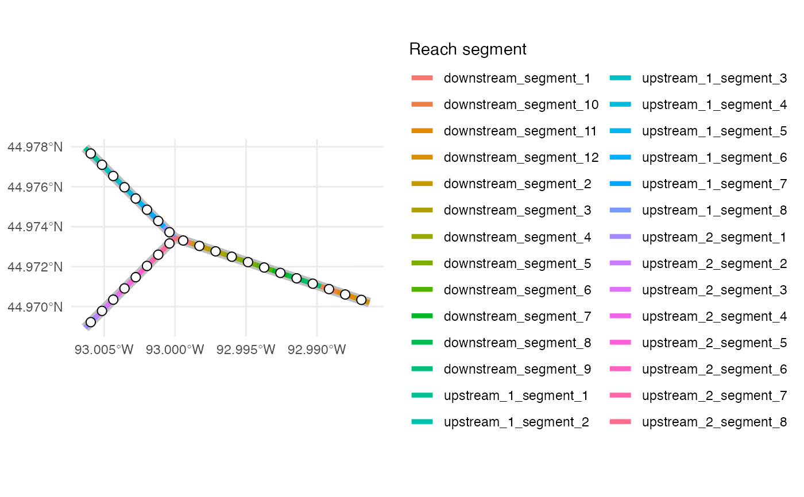

dot-discretize_stream_reaches.RdDivide prepared stream geometries into approximately equal-length reach segments while retaining their line geometry and parent identifiers.
.discretize_stream_reaches(stream_reaches, reach_spacing)An `sf` object with one `LINESTRING` feature per reach segment. The following columns are added:
Uniquely identifies the discretized reach segment within its original `reach_id`.
The actual length represented by the model reach segment, retaining the linear units of the analysis CRS.
An `sfc_POINT` column containing the midpoint along the reach-segment line. The sliced line remains the active geometry.
Each `MULTILINESTRING` is first separated into its component `LINESTRING`s so a reach segment is never created across a spatial gap. Components are handled internally and do not receive a separate identifier.
For each component, the number of reach segments is its length divided by `reach_spacing` and rounded up. The complete part is then divided into that number of equal-length segments. Consequently, no reach segment exceeds the requested spacing, and `represented_length` may be smaller than `reach_spacing` or differ among components. Segment numbers are sequential within each original `reach_id`, including when it contains multiple components.
`model_point` is the midpoint measured along each sliced line, rather than its geometric centroid, so the point is guaranteed to lie on the stream geometry. Additional input attributes are repeated for every model reach segment derived from the source feature.
The names `reach_segment_id`, `represented_length`, and `model_point` are reserved for values created by this function. The input object is not modified.
stream_reaches <- example_stream_reaches
reach_segments <- isw:::.discretize_stream_reaches(
stream_reaches,
reach_spacing = units::set_units(100, "m")
)
reach_segments[c(
"reach_id", "reach_segment_id", "represented_length"
)]
#> Simple feature collection with 28 features and 3 fields
#> Geometry type: LINESTRING
#> Dimension: XY
#> Bounding box: xmin: 499500 ymin: 4979500 xmax: 501080 ymax: 4980500
#> Projected CRS: WGS 84 / UTM zone 15N
#> First 10 features:
#> reach_id reach_segment_id represented_length
#> 1 upstream_1 upstream_1_segment_1 88.38835 [m]
#> 2 upstream_1 upstream_1_segment_2 88.38835 [m]
#> 3 upstream_1 upstream_1_segment_3 88.38835 [m]
#> 4 upstream_1 upstream_1_segment_4 88.38835 [m]
#> 5 upstream_1 upstream_1_segment_5 88.38835 [m]
#> 6 upstream_1 upstream_1_segment_6 88.38835 [m]
#> 7 upstream_1 upstream_1_segment_7 88.38835 [m]
#> 8 upstream_1 upstream_1_segment_8 88.38835 [m]
#> 9 upstream_2 upstream_2_segment_1 88.38835 [m]
#> 10 upstream_2 upstream_2_segment_2 88.38835 [m]
#> geometry
#> 1 LINESTRING (499500 4980500,...
#> 2 LINESTRING (499562.5 498043...
#> 3 LINESTRING (499625 4980375,...
#> 4 LINESTRING (499687.5 498031...
#> 5 LINESTRING (499750 4980250,...
#> 6 LINESTRING (499812.5 498018...
#> 7 LINESTRING (499875 4980125,...
#> 8 LINESTRING (499937.5 498006...
#> 9 LINESTRING (499500 4979500,...
#> 10 LINESTRING (499562.5 497956...
sf::st_coordinates(reach_segments$model_point)
#> X Y
#> [1,] 499531.2 4980469
#> [2,] 499593.8 4980406
#> [3,] 499656.2 4980344
#> [4,] 499718.8 4980281
#> [5,] 499781.2 4980219
#> [6,] 499843.8 4980156
#> [7,] 499906.2 4980094
#> [8,] 499968.8 4980031
#> [9,] 499531.2 4979531
#> [10,] 499593.8 4979594
#> [11,] 499656.2 4979656
#> [12,] 499718.8 4979719
#> [13,] 499781.2 4979781
#> [14,] 499843.8 4979844
#> [15,] 499906.2 4979906
#> [16,] 499968.8 4979969
#> [17,] 500045.0 4979985
#> [18,] 500135.0 4979955
#> [19,] 500225.0 4979925
#> [20,] 500315.0 4979895
#> [21,] 500405.0 4979865
#> [22,] 500495.0 4979835
#> [23,] 500585.0 4979805
#> [24,] 500675.0 4979775
#> [25,] 500765.0 4979745
#> [26,] 500855.0 4979715
#> [27,] 500945.0 4979685
#> [28,] 501035.0 4979655
plot_stream_discretization <- function(stream_reaches, reach_segments) {
ggplot2::ggplot() +
ggplot2::geom_sf(data = stream_reaches, color = "grey75", linewidth = 3) +
ggplot2::geom_sf(
data = reach_segments,
ggplot2::aes(color = reach_segment_id),
linewidth = 1.5
) +
ggplot2::geom_sf(
data = reach_segments,
ggplot2::aes(geometry = model_point),
color = "black",
fill = "white",
shape = 21,
size = 2.5
) +
ggplot2::labs(color = "Reach segment") +
ggplot2::theme_minimal()
}
plot_stream_discretization(stream_reaches, reach_segments)
